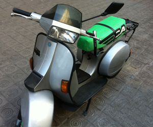
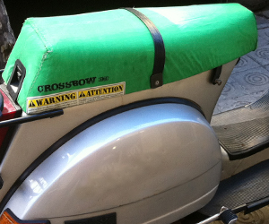
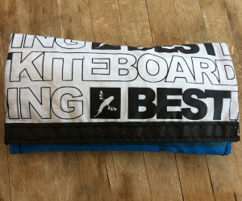
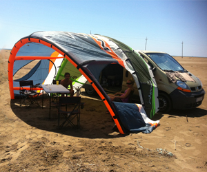
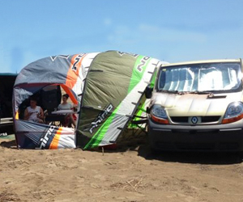

Llevamos el viento en la sangre, es por eso que la moda kiter no sigue las tendencias de los ciudadanos de a pie, ni de los navegantes de crucero.
Fabricamos todo tipo de gadgets con materiales de kite ofreciéndole al material obsoleto otra nueva vida. Introducimos en nuestro día a día una pizca de melancolía, recordando el momento en que estas velas surcaban los mares y nos hacían volar.
- VESPA 200


Aquí tenemos un tapizado kiter de Vespa, a través de una Cabrinha Crossbow 16m.
Quien ha conducido una Vespa nunca olvida sus vibraciones y su motor de derechas.
Como quien ha navegado con una Crossbow ha notado la dureza de la barra y su potencia tractora. - PITILLERA

Una opción más de bolsillo seria esta pitillera kiter con bolsillos para las boquillas, papel y tabaco.
Consta de bolsillo de flotador hermético para que no se seque el tabaco.
- TOLDO CAMPER


Orientado a los fines de semana que nos tostamos en la playa...
Aquí un toldo para ti y los amigos, ya que tras horas de navegación un descanso en la sombra es de agradecer.
Se trata de la fusión de una North Rhino 2005 10m con una North Rhino 2005 14m.
Ventanas con cremalleras al estilo tienda iglú, sacos de arena en los tips. Y quinta línea!! Para los días de mucho viento poder poner una piqueta.
Próximamente más.....